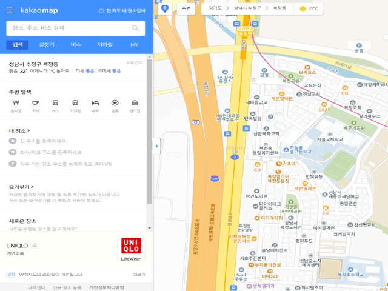

1. 홈페이지 접속
아래 링크를 클릭하여 홈페이지에 접속하세요.
카카오맵 접속하기 2. 검색창에 식당 이름 입력 및 새창 접속하기
아래 사진과 같이 순서에 맞게 진행하세요.
- 검색창에 검색하고자 하는 식당 이름을 입력합니다.
- 지도에 식당 창이 뜨면 식당 이름을 클릭해 새창에 접속합니다.
3. 검색창 URL 확인
URL에서 https://map.kakao.com/ 뒤에 붙은 숫자를 확인하세요.
- URL에서 특정 번호를 확인 후 복사해줍니다.
- 해당번호를 어플 검색창에 입력하면 감성분석 리뷰를 확인할 수 있습니다.